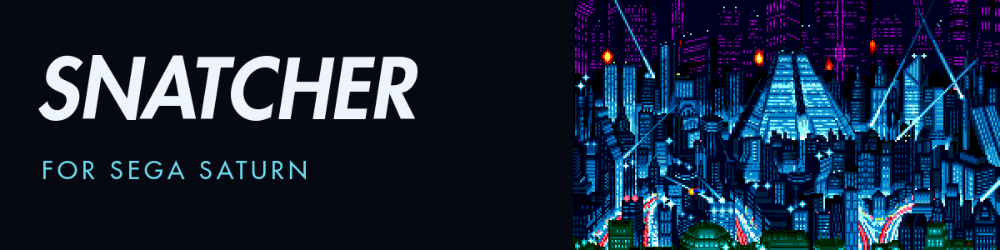

Saturn disc patcher
Turn your US Sega CD copy of Snatcher into a Saturn BIN/CUE. Your disc files stay in your browser.
Your Saturn disc
Download both files into the same folder. Open the CUE in Beetle Saturn or copy the pair into SAROO/ISO/Snatcher Saturn.